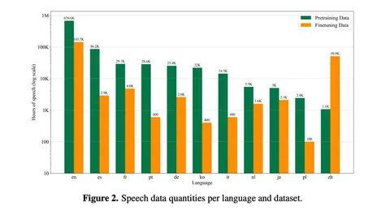
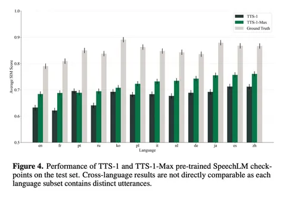

Сегодня начинаем разбирать техрепорт TTS-1 от стартапа Inworld, представившего собственный движок синтеза и довольно подробный отчёт о нём.
С архитектурной точки зрения решение можно описать как «yet another SpeechLM», но с большим количеством инженерии. Есть аудиокодек, есть языковая модель, которая генерирует токены, и есть декодер, который восстанавливает аудио. Но, как обычно, дьявол скрыт в деталях — и ими авторы довольно открыто делятся.
Что под капотом
В качестве кодека используется X-Codec 2 с super-resolution-декодером до 48 кГц. Причины выбора простые: кодек опенсорсный, его удобно адаптировать под стриминг, он сильно экономит хранение и обработку данных. Например, один час моноаудио 48 кГц в сыром виде занимает около 365 МБ, тогда как токенизированное представление с кодбуком на 65 536 токенов — всего около 0,19 МБ при хранении в uint16. Для стартапа это большой плюс.
Кодек переобучали полностью на 110 тысячах часов собственных данных. Помимо модифицированного декодера архитектура осталась стандартной: энкодер на базе Wav2Vec-BERT с ResNet-блоками, декодер Vocos, квантизация FSQ, Multi-Period и Multi-STFT дискриминаторы. Из необычного — дополнительный RMS-лосс, который ввели для борьбы с неконсистентной громкостью на склейках и в high-pitch-сегментах, что особенно проявлялось в стриминговом режиме.
Апсемплинг до 48 кГц
Повышение разрешения аудио из 16 кГц в 48 кГц сделано через двухэтапный uptraining: сначала на данных с native sample rate ≥32 кГц, затем дополнительный fine-tuning на аудио ≥44.1 кГц. За счёт подбора страйдов и hop-length в декодере такой апсемплинг почти не влияет на скорость и сложность обучения и, по словам авторов, даже даёт выигрыш по DNS-MOS.
SpeechLM
Поверх кодека — SpeechLM. В TTS-1 используется LLaMA-3.2 на 1,6B параметров, а в версии TTS-1 Max — LLaMA-3.1 на 8,8B. Общий словарь объединяет текстовые токены, 65 тысяч аудиотокенов и специальные токены, включая теги эмоций и невербальных вокализаций.
На этапе претрена к аудиоданным подмешивается около 20 миллиардов текстовых токенов из RedPajama-v2 и instruction-данных LAION OIG, чтобы сохранить текстовое понимание. Обучались модели с bfloat16, flash attention 2 и fused AdamW. Для распределенного обучения младшая версия использовала DDP, а старшая FSDP и torch.compile. Один полный прогон претрена занял около двух дней для маленькой модели и около 10 дней для большой.
Во второй части поста расскажем про SFT, RL и инженерию деплоя в TTS-1.
Владимир Гогорян
